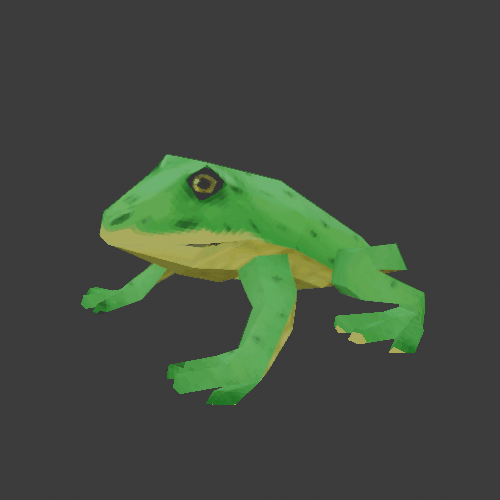

Action Rpg Prototype
This is a small project presenting a 3C (character, control, camera). I've tried
replicating a dark souls / WoW character controller.
The core of the project was made in april 2021 and I polished it in March 2024 to make it presentable.
Polishing included : bug fixing, UI sprites and sounds.
It was a very good learning experience as I was able to learn useful parts present is these types of games
like : Enemy pathfinding, Inventory system, Animation based combat, Abilities/spells and 3D asset
making
The game started as a moba-like game style,
where you click at the position you want to go and the
player follows a path to this destination.
That required coding a pathfinding system. Luckily, the A* Pathfinding project made by Arongran Berg
provides a very well made and strong system. I simply built upon it with
scripts handling player destination (inputs), calculating the path throught the A* algorithm and
following it with a controller.
I wasn't satisfied with the way the player moved, so I implemented it on the enemy and gave the player a standard WASD platformer-like controller.
I wasn't satisfied with the way the player moved, so I implemented it on the enemy and gave the player a standard WASD platformer-like controller.


I also implemented an inventory system with
slots,
this demo features a single slot for weapon. But the
system
can handle multiple types of
equippables (helmet, boots, etc...). The biggest challenge in these kind of systems, for me, is
handling
inputs
(drag/drop) and having a
flexible enough data structure to create new items easily. Luckily, unity provides an efficient
Event
System and
Scriptable Objects to deal
with these challenges easily.
The game has an ability system that works very similarly to the inventory sytem. Every spell can be coded and introduced into the system easily.
The game has an ability system that works very similarly to the inventory sytem. Every spell can be coded and introduced into the system easily.
Next, the most time consuming part of this
project
was handling animaton and player states (idle, running,
attacking, etc..). My system
can easily be approved, and I made a lot of back and fort unity-blender as I couldn't find an
efficient
approach
to creating attack combos
animation like in Dark Souls. It involves multiples states where depending on the player's input,
you
either
continue the combo or go back to
idle slowly.
Anyway, it was very tedious and unintuitive to implement and if I had to do it again I would put more time into making an animation controller handling what animation plays when, for how long and which is next...
Anyway, it was very tedious and unintuitive to implement and if I had to do it again I would put more time into making an animation controller handling what animation plays when, for how long and which is next...


A huge part of making this was creating all
the assets
necessary
for this scene. I was not familiar
with low-poly style
asset creation and I learned a lot about the fundementals of making 3D assets. I was finally able to
develop
a
workflow and create
consistent assets that I liked.
It was also my first time dealing with sounds in a 3D environment. Unity has a built-in sound system
and all I had to do was to create a sound manager script that decides what plays when.
I made the sounds and music in VCV Rack, a free open-source virtual modular synthesizer. I don't consider myself as a musicians by any means, but I believe what I was able to come up with is pretty decent. Here's a snippet of how it behaves in the software :
I made the sounds and music in VCV Rack, a free open-source virtual modular synthesizer. I don't consider myself as a musicians by any means, but I believe what I was able to come up with is pretty decent. Here's a snippet of how it behaves in the software :